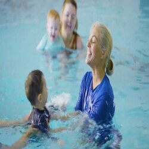
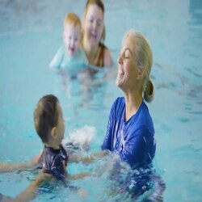
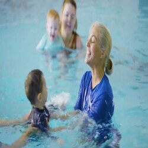

Stein Bang
My name is Stein Bang and I'm currently a freshman studying mechanical engineering at UC Riverside. As a new college student eager to gain hands-on skills and real-world knowledge, I've wasted no time getting stuck into impactful extracurricular programs, student organizations, and challenging coursework. Though I still have much to learn, my natural curiosity and lifelong passion for understanding how things work will serve me well on this engineering journey. I've been fascinated with taking things apart and learning how they operate for as long as I can remember. As a kid, I was the stereotypical boy who loved Legos, racecars, planes, and building things. I recall the time I disassembled our broken VCR to see the intricate system of wires, circuit boards, motors, and gears inside. While it got me into trouble, it fueled my curiosity about electronics and mechanics. In high school, I took every advanced math and physics course available to understand better the forces and physical phenomena that underpin engineering.
My senior design project involved designing and 3D printing a model dragster optimized for top speed. This experience solidified my interest in mechanical systems and performance optimization. Now at UC Riverside, I'm involved with two extracurricular programs that let me apply technical skills - the Highlander Racing Club and the undergraduate Aerospace Program. The Racing Club designs, builds, tests, and races a Formula SAE car to compete against other colleges. Contributing to the drivetrain and suspension teams has expanded my knowledge enormously. Seeing classroom theory applied to a real racecar has been invaluable. The Aerospace Program also provides hands-on experience, like analyzing fluid dynamics data for a hypersonic jet engine and using simulations to optimize wing designs. Getting exposure to projects like these as a freshman is a dream come true! Beyond extracurricular activities, my mechanical engineering courses have also proven engaging and stimulating in my first year. Dynamics, Mechanics of Solids, Thermodynamics, and Introduction to Computer-Aided Design have provided a rigorous foundation in technical fundamentals while also allowing creativity. I enjoy that we can tailor assignments and projects based on personal interests. For CAD, while some students design consumer products, I optimized a model racecar suspension - right up my alley! Course projects like this help me apply knowledge to my passions. To round out my freshman experience, I stay active in intramural water polo and swimming. I've also joined UCR's student chapter of the American Society of Mechanical Engineers to meet fellow students and learn about career paths. Maintaining work-life balance and personal connections is just as crucial as academic success in my opinion. I try not to isolate myself in just engineering activities. In addition, I'm starting to explore undergraduate research opportunities. I'm interested in assisting a professor's work on designing ultra-efficient HVAC systems. Their experimental setup to test radiative heat transfer and airflow could provide invaluable hands-on learning. While I don't expect to make major contributions as a freshman, gaining any research experience at this stage could pay dividends for my career. Even menial tasks like assembling test apparatus and taking measurements would expand my skills. With my first year of college behind me, I'm proud of the foundation I've built through challenging courses, hands-on engineering projects, and student organization involvement. However, I know this is only the beginning. With continued passion, diligence, and eagerness to learn, I plan to soak up as much mechanical engineering knowledge and experience as possible. Though the future remains uncertain, I can't wait to discover where this path takes me!
As I continue my mechanical engineering studies, I aim to ramp up my involvement in hands-on research and design projects. I believe these types of practical experiences will be just as crucial as my coursework when it comes time to search for internships and jobs. I'm hoping to assist professors with computational fluid dynamics modeling to predict airflow and heat transfer in complex systems. Gaining experience setting up virtual simulations, analyzing results, and validating models experimentally would allow me to grow my skills. I also plan to take on a bigger role in UCR's Highlander Racing Club. Now that I'm more familiar with the overall car, I want to lead design aspects like developing suspension components or improving drivetrain efficiency. The process of ideating creative design solutions, performing analysis, prototyping, testing, and iterating is great preparation for real-world engineering work. My goal is to immerse myself in multidisciplinary team projects that exercise my problem-solving abilities, technical knowledge, and project management skills. In addition to hands-on work, I recognize the importance of developing communication and business acumen. I hope to get involved with UCR's Engineering Entrepreneurship Club to explore the intersection of engineering, innovation, and business. Learning startup skills like identifying real-world needs, pitching ideas, and bringing products to market would expand my thinking beyond pure technical ability. I believe engineers have a responsibility to consider how their work impacts society and the business landscape. Broadening my perspective will help me succeed in teams tackling society's grand challenges. As my UC Riverside engineering journey progresses, my areas of interest continue to evolve. While mechanical systems remain a core passion, I've recently become fascinated with the medical applications of engineering, like prosthetic design, implantable devices, and biomechanics. I hope to take some courses in bioengineering and biomechanics to determine if this could be a fruitful specialty for graduate school or my career. I love that engineering provides constantly expanding possibilities to follow my developing curiosities. When I reflect on my first year and a half at UC Riverside, I'm amazed at how much I've grown from a wide-eyed freshman to a capable engineering student. From challenging courses in thermodynamics, fluid mechanics, and heat transfer, to leading design projects in student clubs, I've accelerated my learning in ways I never could have expected. However, I know I'm still at the base of a tall mountain, with much left to learn and experience. As I consider potential career paths ranging from clean energy to biomedical devices, I aim to continue developing well-rounded technical and business skills. I hope to complete multiple internships, study abroad if possible, and take part in an international design competition during my remaining college years. With a passion for lifelong learning and a willingness to take calculated risks, I'm confident I can achieve great things as an engineer. However, my ultimate metric of success will be using my knowledge to invent technologies that improve people's lives. I can think of no greater purpose than applying my engineering talents to make the world a little better. If I can do that, I will consider my education a success.
As I enter my junior year at UC Riverside, I'm reflecting on my long-term ambitions beyond just getting a degree. Though I still have much to learn, my self-confidence and identity as an engineer have grown tremendously since starting college. I'm beginning to envision the type of career I hope to build over the next 5, 10, or even 20 years. While specific job titles and companies are still unclear, I have an emerging sense of the work environments, subject areas, and team dynamics where I believe I could thrive. I aim to pursue hands-on roles focused on mechanical design innovation. I hope to collaborate in diverse, multidisciplinary groups tackling engineering challenges that matter. Whether developing sustainable energy systems, improving transportation infrastructure, or advancing medical technologies, I want to make tangible contributions to progress. However, technical work is only one aspect of a fulfilling career. I aim to find an organizational culture that prioritizes collaboration, diversity, employee enrichment, and work-life balance. I intend to continue growing my communication, leadership, and emotional intelligence capabilities in parallel with my technical skills. By boldly taking on new challenges while staying grounded in core values, I can organically evolve into the type of engineer I aspire to become. There will be unexpected twists and turns, as no path is linear. However, envisioning my best-case scenario will guide me toward opportunities where I can create meaning and impact. As graduation nears, reflecting on my UC Riverside experience leaves me with immense gratitude and optimism. From a bright-eyed freshman to a seasoned engineering senior, I've grown tremendously in knowledge, skills, and vision. Core courses like thermodynamics, fluid mechanics, heat transfer, and mechanics of materials equipped me with a rigorous technical foundation applicable across industries. Participating in student organizations like the Highlander Racing Club, EcoCAR competition, and Engineers Without Borders imparted critical teamwork, leadership, and project management abilities. The diversity of students and faculty fostered an inclusive, well-rounded worldview. I'm especially thankful for mentors like Dr. Collins who ignited my passion in thermal systems design. His guidance through undergraduate research and senior projects made me ready to begin an engineering career. Of course, I couldn't have made it this far without endless love and support from family and friends. To everyone who has touched my UCR journey, thank you. I will carry lessons from this chapter forever. Though commencement closes one chapter, I could not be more thrilled to begin the next. I believe a great engineer is not defined by where she works, but by how she positively impacts others. I am eager to put my UCR learnings to work building technologies and teams that make lives better. The future remains undefined, but I am confident UC Riverside has prepared me to make meaningful contributions wherever the path leads. For that, I will be eternally grateful. Go Highlanders!
Experience
Barista
• Make customers enjoy our coffee
• Making sure customers get best coffee
• Served lots of coffee
Education
UC Riverside
Portfolio
.png)
.png)
.png) 

